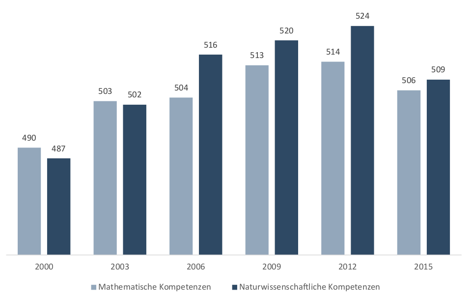
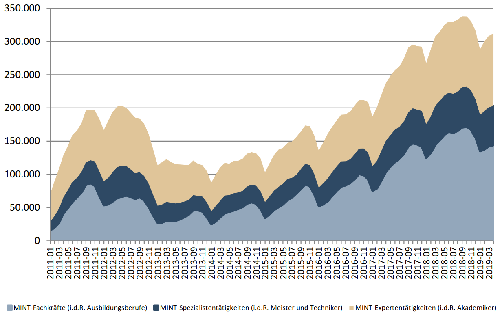
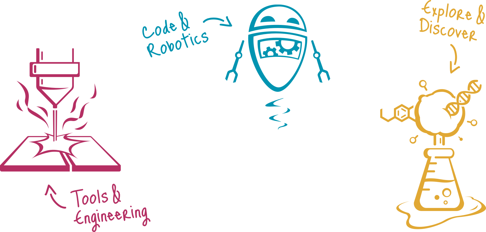
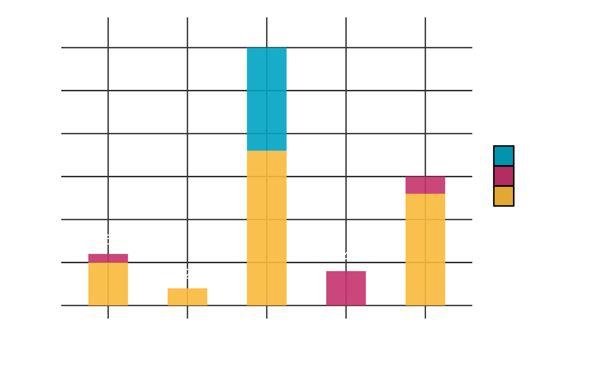
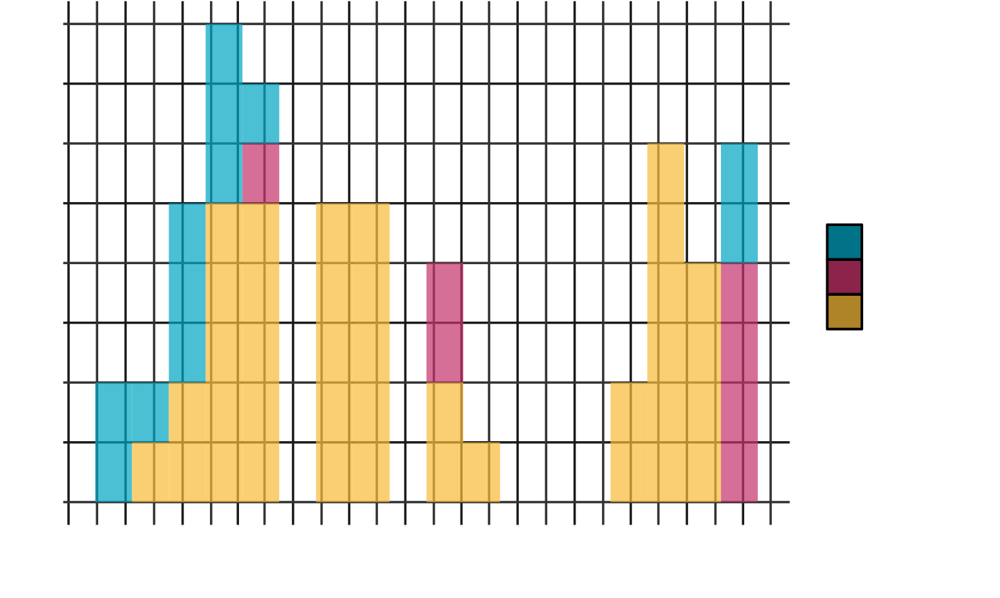
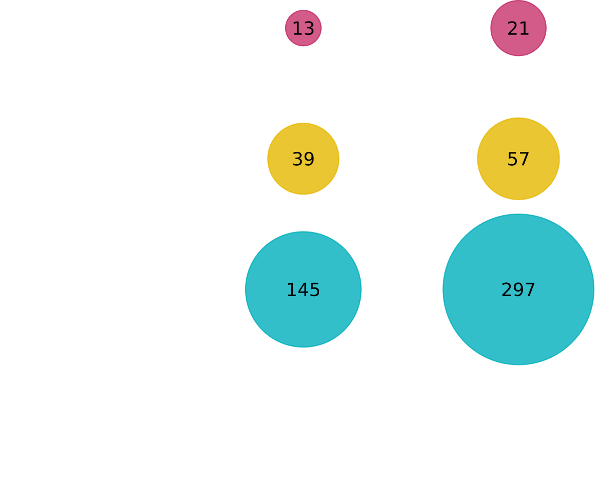
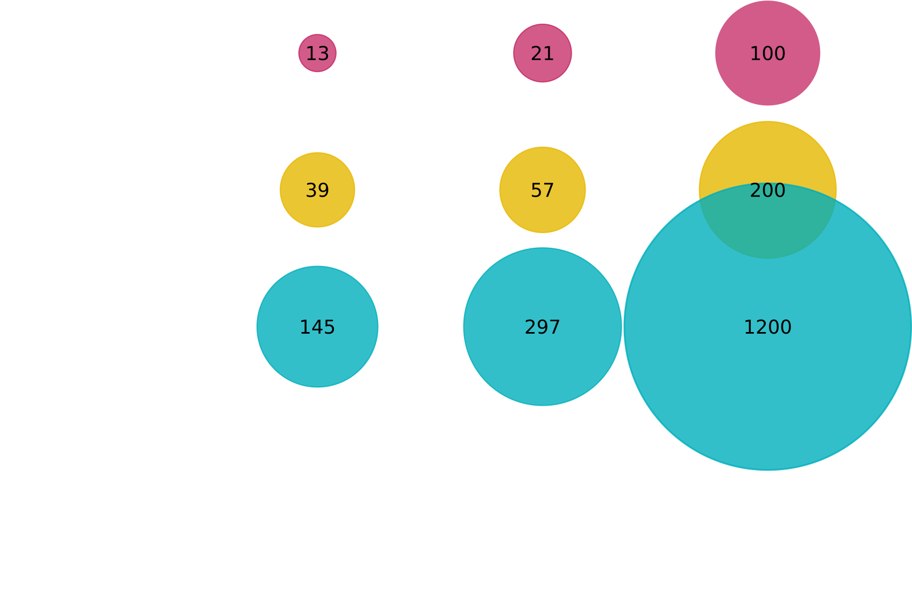
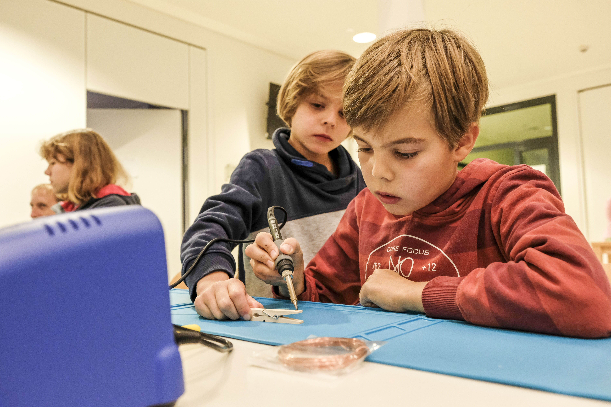

FabLab Oberland e. V.
Die Technik- und Wissenschafts-Initiative im Oberland
SLIDE 1
Animate Anything
width:0;
border-bottom:120px solid red;
border-left:60px solid white;
border-right:60px solid white;
SLIDE 2
With Auto Animate
Wieso muss MINT-Bildung gefördert werden?
Citrix Studie
Internationale repräsentative Umfrage
“Deutschland hinkt beim Digitalen Lernen hinterher und belegt den letzten Platz”
09. September 2020
MINT-Kompetenz in Deutschland
in PISA Punkten
MINT-Frühjahrsreport 2019 (Institut der deutschen Wirtschaft)
Also tun wir was dagegen?
Tankred Schipanski
Digitalpolitische Sprecher der CDU/CSU-Fraktion im Bundestag
“Der gestrige Gipfel hat erneut gezeigt, dass die KMK nicht willens oder fähig ist, die dringend notwendigen Reformen in der digitalen Schulbildung zu gestalten”
22. September 2020
Was passiert wenn sich der Nachwuchs nicht für MINT interessiert?
Der Effekt auf die Wirtschaft
Offene Stellen im MINT-Bereich (bereinigt)
MINT-Frühjahrsreport 2019 (Institut der deutschen Wirtschaft)
Wieso ist MINT-Förderung im ländlichen Raum besonders wichtig?
- Bildung von Wissenszentren in den Städten
- Wegzug für die Ausbildung: "Brain drain"
- Kaum außerschulische MINT-Angebote
- Abbau von Vorurteilen
Die Herausforderungen
- Mangelnde Infrastruktur
- Gesellschaftlicher Fokus
MINT in Miesbach
Lokal vs. Mobil

Kursangebot
Einsätze des mobilen FabLabs
Einsätze des mobilen FabLabs
In Zahlen
Ausblick
Zum Vergleich: 915 Schüler:innen besuchen das Gymnasium Miesbach (Quelle: KM)
Einsätze des mobilen FabLabs

Einsätze des mobilen FabLabs
Und lokal in Gmund?
- Offener Abend
- Ferienkurse
- Workshops
- Nachmittagsbetreuung?
- Projektberatung
- Mentoring Programm
Bis bald!